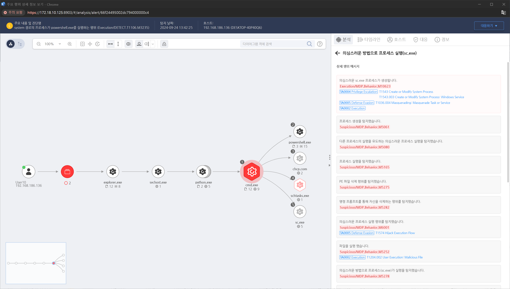

MITRE ATT&CK 액션을 기준으로 대응 방안을 작성
프로세스 실행 인자 모니터링을 통해 "sc.exe" 프로세스가 생성되는 행위를 탐지합니다.

서비스가 설치되거나 변경된 시점을 파악하기 위해 Windows 이벤트 로그를 분석합니다.
시스템에 설치된 모든 서비스를 목록화하여 비정상적이거나 의심스러운 서비스를 식별합니다. 특히, 최근에 추가된 서비스나 시스템에 원래 없던 서비스를 중점적으로 조사합니다.
서비스와 연관된 실행 파일을 분석하여 악성 여부를 확인합니다. 실행 파일의 경로가 비정상적이거나 불명확한 경우, 바이너리 분석 또는 샌드박스 분석을 통해 해당 파일이 악성인지 확인합니다.
침해 조사(포렌식) 팀은 해당 서비스가 설치된 방법과 경로를 추적해야 합니다. 공격자가 서비스 설치를 위해 사용한 초기 접근 벡터와 권한 상승 방법을 분석합니다.
의심스럽거나 악성으로 확인된 서비스는 즉시 중지하고 시스템에서 제거합니다. 이를 위해 sc delete 명령어를 사용하여 서비스를 삭제하거나, Windows 서비스 관리자를 통해 수동으로 제거할 수 있습니다.
서비스 설치로 인해 변경된 시스템 설정을 복구하거나, 감염된 시스템을 포맷하고 클린 이미지를 재설치하는 것이 필요할 수 있습니다.
서비스 설치나 변경에 대한 실시간 모니터링을 통해 향후 비정상적인 서비스 설치를 조기에 탐지할 수 있도록 설정합니다.
악성 서비스 설치를 수행한 계정의 활동을 추적하고, 비정상적인 권한 상승이 이루어졌는지 확인합니다. 또한, 해당 계정의 비밀번호를 변경하거나 일시적으로 비활성화하여 추가적인 피해를 방지합니다.
서비스 설치 권한 제한 (M1026 - Privileged Account Management)
서비스 모니터링 및 알림 설정 (M1047 - System Logging & Monitoring)
시스템 서비스 및 프로세스 권한 검토 (M1033 - Process Monitoring)
Windows 보안 설정 강화 (M1040 - Security Configurations)
네트워크 및 액세스 제어 강화 (M1031 - Network Segmentation)
Action 실행시 함꼐 영향을 받는 다른 Techniqes
| ATT&CK |
|---|
| T1543.003 |
| T1059.003 |
| T1569.002 |
| D3FEND |
|---|
| Techniques name |